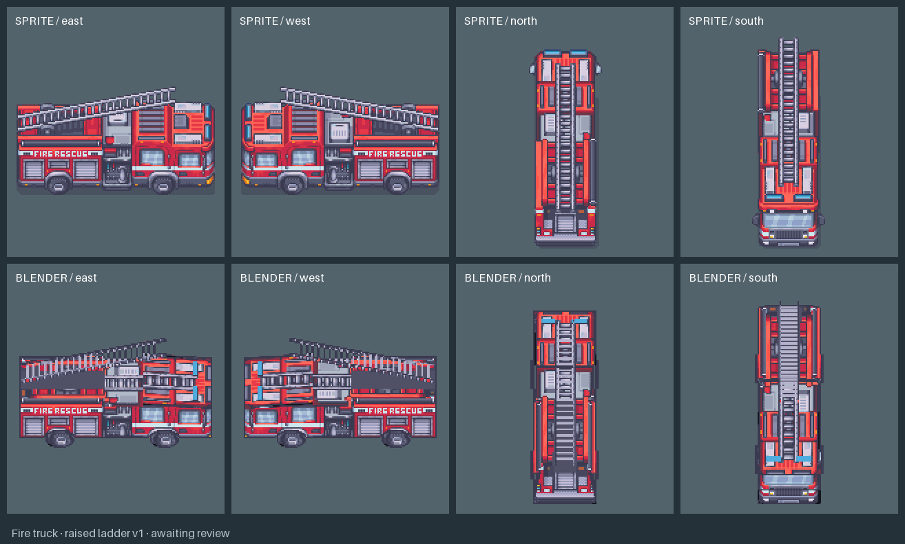
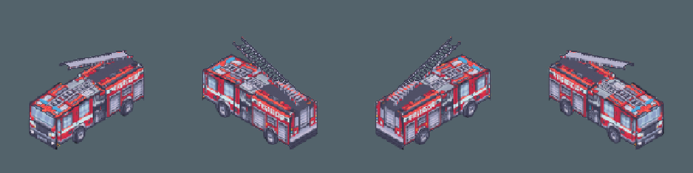
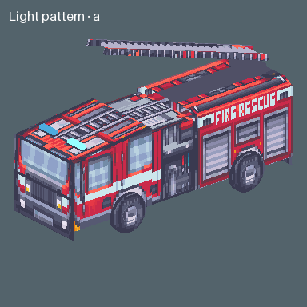
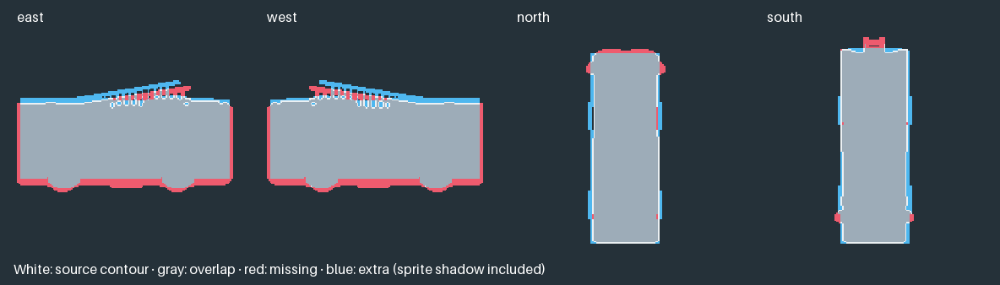

Original sprites above, matched Blender renders below.


Raised source owns its paint and rest ladder geometry; arbitrary ladder motion and steering remain unqualified. Whole-body neutral wheel roll qualified on exact GLB; steering remains neutral. Production art approval pending.


Download the model · Other vehicle reviews · Tilefun Workshop
Sprite source: Modern Exteriors by LimeZu. Diagnostic awaiting review; exact production art approval pending.